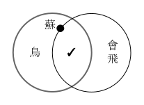

基本觀念
邏輯與論證
我們時不時會在生活中聽到或看到人們在討論問題的時候提到「邏輯」一詞，有時候可能是為了解釋別人思考事情的方式，而會說出像是「他這麼說背後的邏輯其實是……」；而另一些時候則可能是為了批評別人說的話沒道理，因此說對方「講話不合邏輯」，或「邏輯死亡」。
在上述的第一種情況裡，「邏輯」的意思是指一個人思考事情或說明事情的條理或關聯。由於每個人想事情或說明事情的條理與關聯都不見得相同，因此不同人就可能有不同的邏輯。但是在第二種情況裡，「邏輯」的意思就稍有不同，當我們去批評一個人說話或思考「不合邏輯」時，其實就暗示了我們在說話或思考時其實有一些特定的規範必須遵守，如果違反了這些規範的話就等於犯了某種錯誤，而這些特定的規範就被稱為「邏輯」。既然邏輯是每個人說話或思考時都必須遵守的一種規範，它當然就不能因人而異，否則人便無法基於這樣一套規範去批評別人的說話或思考方法。
當「邏輯」作為一門學科時，這門學科所要研究的主題即是前述第二種意義中提及的「說話或思考時必須遵守的規範」。然而，當我們說話或思考時究竟為什麼需要遵守特定的規範？而這些規範的內容又是怎麼來的？
首先要釐清的是，前面所談的規範其實並非真的是任何人在任何情境中說話或進思考時都必須遵守的。畢竟人之所以說話或思考，可以是為了許多不同的理由與目的，當一個人說話及思考的目的不同時，這些行為所必須遵守的規範就有可能有差異。比如說，當我為了警告朋友一場即將到來的災難時，我的說話是否具有足夠的說服力就會對達成目的有決定性的影響，因此當我在這種情境中說話時，就必須遵守著某些規範來使得它具有說服力；但如果我現在是因為和朋友起了爭執，所以打算說個笑話來緩解雙方間緊張的情緒時，此時我的說話是否具有足夠的幽默感而能搏得朋友的一笑，就會是我在此情境中說話時必須考量的問題，那麼為了表現出足夠的幽默感，我說話時又必須遵守另一套規範才能使我達成目的。
那麼，當邏輯作為一套指導人們說話或思考的規範時，它又是在什麼情境下成立，或者說，是為了達成什麼目的而成立的一套規範呢？簡單地說，邏輯就是一套用來指引人們做出正確推論或論證的規範。只要推論時遵循著這套規範，就能確保推論的合理性；相反地，若在推論時違反了這套規範，那麼推論就是有瑕疵或有問題的，就不足以令人採信。
什麼是論證？
論證（argument）、證明（proof）、推理（reasoning）、以及推論（in- ference）等概念，確實存在一些細微的差異，比如說，當我們在做論證或證明的時候，往往是已經知道了要證明的結論是什麼，只是尚不知道這個結論和我們已知的線索和條件之間有何關聯，因此試圖透過論證或證明將該結論從已知當中推導出來。比如在做幾合學的證明題時，題目都會事先告訴我們一個事實（例如圖中的某兩個線段等長），然後再給我們一些關於圖形的已知條件，最後要我們利用已知的條件來試圖證明該事實。相對地，當我們在進行推論或推論活動時，則往往並不事先知道結論的內容，而是要親自從各種線索中慢慢拼湊出一個結論。例如當警察在調查刑事案件時，就無法事先知道兇手是誰，而是要慢慢地從現場蒐集到的證據拼湊出兇手的資訊。
不過由於在這個課程裡，比起這四個概念之間的差異，我們更關心的是它們的共通點，所以同學們原則上可將這四個概念理解為彼此意義相同、可以交替使用的概念。
那麼究竟何謂論證呢？所謂論證，不外乎就是從一些已知的資訊，根據特定的推論規範，將結論給推導出來的過程。所有論證都具有一個共通的結構，即是「由前提推導出結論」的結構，其中的「前提」指的就是我們推論時當作線索的已知資訊，而結論則是推論的終點及目標，也就是推論時想要從我們已經掌握的資訊去推導出來的新資訊。推論的前提並沒有數量上的限制，畢竟在多數的情況下能夠掌握愈多的推論前提，就愈能夠幫助我們推導出結論；但每個推論卻只能有一個結論，這是因為即使一組相同的前提能夠推導出來的結論確實可以有很多個，但是當我們要用同樣一組前提推論出數個結論時，我們依然只能先推導出一個結論，再推導出第二個，然後第三個……，而每一次的推導其實就進行了一次推論，因此就結果來說，我們只是利用同樣一組前提進行了多次的推論而推導出多個結論而已。
前面提到，所有的論證都具有「由前提推導出結論」這個共通的結構，我們在上一段中說明了何謂前提，也說明了什麼是結論，但推論或論證的靈魂其實就在於從前提到結論的那個推導過程。當我們在一個推論活動中嘗試從前提「推導」出結論時，這整個推導的過程就是要在推論的前提與結論之間建立起一個恰當的關係——即「前提能夠支持結論」的關係。只要一個推論的前提確實能夠支持結論那就是一個好的、正確的推論，若是一個推論的前提無法支持結論時，那就是一個差勁的、錯誤的推論。
然而一個推論的過程到底要滿足什麼條件才算是一個「前提支持結論」的推論，卻不是三言兩語就能說清楚的事情（所以才需要有這一學期的課）。此外，推論也有類型的區別，而不同類型的推論具體而言要滿足什麼條件才能讓前提支持結論也都彼此不同，所以無法一概而論。既然如此，我們接下來就針對幾種常見的推論類型來分別介紹各自的「支持」關係如何才能成立。
演繹推論與非演繹推論
首先，根據推論的前提給予結論的「支持關係」是否具有確定性，可將所有推論分成兩類——演繹推論（de- ductive reasoning）和非演繹推論（non-deductive reasoning），後者的前提給予結論的支持具有確定性，或者說，對任何演繹推論而言，當前提支持結論時，前提的真就能夠保證結論一定也是真的。相對地，後者的前提給予結論的支持則不具有確定性，也就是說，就算當一個非演繹推論的前提確實支持結論時，前提的真也無法確保結論一定為真。換言之，即使是一個前提支持結論的非演繹推論，就算推論的前提全部都是真的，結論也仍然有錯誤的可能。
當然，上述這樣的描述對多數初接觸邏輯的同學來說恐怕過於抽象，所以我們接下來就從一些具體的案例來說明兩者之間的差別。
非演繹推論
非演繹推論其實是我們日常生活中經常會用到的推論方法，其中又可再被細分成歸納推論（inductive reasoning）、溯因推論（abductive reasoning）、以及最後一種定位比較麻煩的訴諸最佳解釋推論（inference to the best ex- planation，簡寫為 IBE）。以下將一一介紹這三種非演繹的推論方法。
歸納推論
歸納推論可以說是每個人的日常生活都或多或少使用過的推論方法，我們可以將歸納推論的方法簡單地區分成以下三個步驟：一、透過觀察來累積資料（作為推論的前提）；二、從觀察得到的資料中統整出資料間的共通性或規律；三、最後再將前一步驟中發現到的共通特性或規律性推廣到那些未被觀察到的個別案例上。
舉例來說，當我們每天都看到太陽從東西邊升起西邊落下（透過觀察來累積資料），我們從這些觀察資料當中發現太陽似乎具有某種規律性：每天都會從東邊升起西邊落下（從資料中統整出規律），於是我們自然而然地便接受了明天的太陽亦會自東邊升起西邊落下（將規律推廣到未被觀察到的案例上），後天的太陽亦是如此，甚至是大後天、大大後天也都會如此。
然而，當我們在最後的步驟中判斷說「明天、後天、大後天……的太陽都會從東邊升起西邊落下」時，由於這些都還是未來的事，因此我們不可能是基於觀察到太陽真的在明天、後天、大後天等日子裡也都從東邊升起西邊落下才做出這些判斷的（畢竟那些日子根本就尚未到來）。那麼我們是如此得知這些事情並做出這些判斷的？還是說，我們其實根本就什麼都不知道，只是胡亂猜測的而已？事實上，我們在此情況下所做出的那些關於未來的判斷，就是透過歸納推論的手段所獲得的。
由於歸納推論是一種非演繹推論，而根據我們先前介紹的非演繹推論的特色可以得知，歸納推論是一種具有不確定性的推論。也就是說，即使我們進行歸納推論時所使用的前提（透過觀察累積的資料）都是正確的，而推論的過程本身也沒有什麼瑕疵，卻仍不能保證結論一定是正確的。這點其實從前面對歸納推論的步驟分析應該就能看得出來。
畢竟在進行歸納推論時，我們僅僅是從過去透過觀察所累積到的資料去統整出「這些資料」當中的規律性，然而，即使這個規律性確實存在於過去的那些資料當中，這也不表示相同的規律在未來仍會繼續維持下去。然而這並不意味著歸納推論就是一種沒有價值的推論方法，這是由於需要進行歸納推論的情況往往都是我們根本無法直接去確認結論的情況。因此，透過歸納推論將觀察所知的案例中的規律性推廣到那些未被觀察到的個案時，固然無法保證一定會成立，但至少可以提高結論成立的機率。那麼相比於原本對結論所談及的事情根本是完全無知的情況，能夠透過歸納推論來提高結論成立的機率，就讓我們能夠更合理地去接受結論的陳述。
例如前面所用的太陽每日東升西落的例子，我們原來根本無從去確認在那些「尚未來到的日子中」太陽究竟是否也會東升西落。但當我們進行歸納推論時，過去資料中所顯示出來的規律就算不能保證未來的日子裡太陽也會符合相同的規律，但至少可以令我們有理由去相信在未來的日子裡，太陽也會像過去的日子般東升西落。
或者再舉另一個例子，假如有一個盒子裡面放了五顆球，你需要去判斷盒子裡的球都有什麼顏色，可是你每次都只能拿一顆球出來看，而且看完還必須將球再放回去。在這個例子裡，你當然永遠都不知道確定盒子裡的球都有哪些顏色，畢竟無論你拿再多次，總是有可能你每次拿到的都是同一顆（或同樣那幾顆），可是只要你檢查的次數足夠多的話，比如說在你已經檢查過百次的情況下，如果你每次拿出來的球都是白色的球，即使你依然無法確定你已經檢查過每一顆球了，你還是應該會有相當的信心認為盒子裡的球都是白色的。假如百次仍不足，你可以再試上千次，甚至是萬次。無論你試過多少次，你都無法確定你是否已經看過每一顆球了，但隨著檢查的次數愈多，假如出現的結果都相同的話，你應該就能有愈高的信心去相信盒中的球都是白色的。
在以上的案例中所顯示的就是歸納推論的價值：即使一個好的歸納推論不能保證結論一定是正確的，但它至少能夠透過資料或證據的增加來增加結論成立的可能性，進而增加結論的合理性。
溯因推論
顧名思義，溯因推論正是一種利用我們對事物間的因果關係之理解來進行的一種推論，而這也是在日常生活中十分常見的推論方法。
所謂「因果關係」指的是事件之間的影響力關係，當我們描述兩個或兩類事件之間具有因果關係時，我們通常都會區分出在這兩個或兩類事件中誰是因誰是果，並主張作為原因的事件具有某種影響力，會導致結果事件的發生。而這種描述又可再被區分成個別事件間的因果關係和事件類型之間的因果關係。例如「2016年以高雄美濃為震央的強烈地震導致了台南維冠大樓倒塌」就是在描述兩個個別事件之間的因果關係，而「強烈地震的發生會導致脆弱的建築物倒塌」則是在描述兩個事件類型之間的因果關係。差別在於個別事件間的因果關係都是單次發生的，不會重複；而事件類型間的因果關係則可以適用於許多在不同時間與地點發生的不同個別事件之間。
我們對因果關係的認知多半是透過兩種管道：
一、基於經常性地觀察到兩個事件之間按照先後順序伴隨發生，例如當我們觀察到每當天空中烏雲密佈之後，伴隨而來的往往就是一場雨，久而久之，隨著我們觀察到這兩類事件伴隨發生的次數愈來愈多，而且很少會有例外的時候，我們就會認為在「天空中烏雲密佈」和「降下雨水」這兩類事件之間有因果關係，而且會判斷前者是導致後者發生的原因（因為原因的時序必須是發生在結果之前的）。眼尖的讀者應該不難發現，這種認識事件之間的因果關係的手段其實就是一種歸納推論。此外，由於這種認識因果關係的手段依賴對相似情況的重複觀察，所以它也只能適用於「事件類型」之間的因果關係。
二、基於我們能夠用其中一個事件的發生，再加上事件發生當時的環境與背景條件，來解釋另一個事件為什麼會發生。例如當我們在地震過後發現維冠大樓倒塌的發生，在考慮到大樓的倒塌一般都需要強烈的外力作用才會發生，而在大樓倒塌的事件之前只有震央在美濃的強烈地震能夠産生這麼強的外力，再加上事後的調查發現大樓本身的建材與設計不符，有偷工減料的情況，致使大樓本身的結構就較脆弱。在綜合了以上這些資料後，我們可以理解正是由於地震帶來的強烈震動使大樓脆弱的結構遭到破壞因而發生倒塌事件，因此便認為是美濃為震央的強烈地震導致了維冠大樓的倒塌。這種推論的方法與歸納推論就較不相關，而是會涉及我們稍後才會介紹的第三種非演繹推論——訴諸最佳解釋推論，所以此處就不多著墨。
無論是個別事件的因果關係還是事件類型的因果關係，都具有一個共通的特徵——因果關係是一種單向關係。當我們知道事件A與事件B之間具有因果關係，且A是原因而B是結果，我們即可知道事件A的發生會導致事件B的發生，但反過來卻不見得會成立。這就是因果關係的單向性。
由於因果關係具有這種單向的特性，所以當我們要根據已掌握的因果關係來推論時，不難發現要從原因推論出結果並不困難，畢竟每個原因會導致怎樣的結果發生都是一對一的關係，因此知道了原因通常也能知道結果；但相同的結果究竟是由什麼原因所導致的卻常常會有多種可能，因此使得從結果逆推出原因就會遭遇到困難。舉例來說，一但我們知道「強烈地震會導致結構脆弱的建築物發生倒塌」這個因果關係以後，只要知道有強烈的地震（原因）發生，就能知道附近結構脆弱的建築將會倒塌（結果）。然而反過來就不成立了，比如，當我們發現一棟結構脆弱的建築物發生倒塌時，若想去逆推出原因，則除了可能是因為強烈地震所致以外，也有可能是因為洪水掏空地基，或者是土石流擠壓推倒建築，又或者是在強烈海嘯的衝擊下倒塌的。
然而溯因推論就是一種要利用對結果的認知來逆推出原因的推論方法，那麼要如何解決「不同的原因都有可能導致相同的結果發生」這一問題，就成為溯因推論的主要難題。
從溯因推論方法的實際使用案例來看，或許可以較容易看出上述的難題是如何在實踐中被處理的。考慮警察調查兇殺案件的情形：當警察收到案件通報的時候，往往都是案件已經發生結束的時候，因此當警方趕到現場時，他們能夠調查的線索和證據一定都是在案件發生的過程中所遺留下來的痕跡。換句話說，警察在現場能夠調查的線索和證據，其實都是由「案件發生」這個事件作為原因，所導致的「被遺留在現場的痕跡」這些結果。因此，當警方透過調查這些在案發現場被遺留下來的痕跡來推論或還原案件真相時，其實就是試圖從結果逆推出原因的工作，那麼警察是如何處理逆推的困難呢？
前面提到，從結果逆推原因會遇到的困難是，相同的結果若要究其原因的話可以有多種不同的可能性。然而當警察在調查案件時，總是要盡可能地蒐集愈多的證據，那麼，雖然對每一個證據而言，可能導致它出現在現場的原因固然會有許多不同的可能，但如果同時考量多個證據同時出現在案發現場的話，那自然就會大大地縮減原因的可能性的範圍。
舉例來說，當警察調查到案發現場（某人家中）遺留下來的指紋證據，並且經過比對後發現這個指紋並不屬於這個家中任何成員，那這個指紋有可能是誰遺留下來的？雖然這個指紋的確有可能是兇手犯案時遺留在現場的指紋，但同時也可能是任何有機會來被害人家中造訪的親友或同事等。因此在只有掌握到指紋這一項證據的情況下，確實很難據此便判斷出兇手是誰。
但如果除了指紋之外，警察還發現了兇器，並在兇器人驗出同一個人的指紋時，將這兩項證據加在一起考慮的話，就會發現「指紋主人就是兇手」的可能性便提高了，畢竟任何到訪的客人固然都可以在被害人家中留下指紋，可是要能夠在兇器上也留下指紋的人，除了兇手以外似乎也沒有太多其他可能。
如果這兩個證據加在一起也無法有足夠的說服力，警察也可能會調查被害人的屍體上是否有遺留下不屬於被害人自己的身體組織，例如毛髮，或是被害人在拉扯打鬥的過程中用指甲從兇手身上抓下來的皮膚組織等，並藉過檢驗出來的DNA進行比對來確認兇手的身分。畢竟要能夠同時在被害人家中與兇器上都留下指紋，並和被害人發生爭執打鬥並遺留下自己的皮膚組織在被害人的甲縫中的人，除了是兇手本人以外的可能性又因為新的證據而變得更少了。
值得注意的是，在溯因推論中，雖然隨著調查到的證據增加，也會提高某個結論成立的機率，可是背後的理由卻和歸納推論的不一樣的。歸納推論背後預設的是某種被稱為經驗法則的原則，根據經驗法則，如果有些事情在過去的觀察中會規律性地在相似條件下一直發生，那麼可以合理地認為相同的事情在未來的相似條件下也應該會繼續發生。然而在上述溯因推論的案例中，結論成立的機率之所以也會隨著證據的增加而提升，卻是基於別種理由。
在警察調查兇殺案件的例子中，假如我們將每一項證據都分開來單獨考慮的話，確實很難判斷說究竟是什麼原因導致這些證據會出現在案發現場，畢竟導致一個證據出現在案發現場的原因有太多不同的可能性了。可是當我們將多項證據放在一起考慮的話，將會發現，要同時讓這些證據全部都出現的案發現場的可能性就會被限縮在一定的範圍內。
比如說，假設警察調查到了 A、B、C 三項證據，在這三項證據被分開來獨立考慮時，發現能導致證據 A 出現的可能原因共有 a、b、c、d 四種；能導致證據B出現的可能原因則有 c、d、e、f、g 五種；而能夠導致證據 C 出現的可能原因則共有 d、f、g、h 四種。那麼無論是從哪一項證據來考慮，都會發現要找出真正令這些證據出現在案發現場的原因都相當困難。
但如果我們將這三項證據放在一起考慮，去追問有可能是什麼共同的原因導致這三項證據同時都出現在案發現場？就會發現只剩下 d 這個可能性可以同時令 A、B、C 三項證據都出現在案發現場。此時d就會是在眾多可能的答案中最有可能成立的那一個答案了。
一些比較細心的讀者可能會注意到，之所以在把三項證據放在一起考慮時會限縮原因的可能範圍，是因為我們要求要為三項證據找到一個「共同」的原因。假如沒有這個要求的話，能夠導致三項證據都出現的原因仍然會許多不同的可能性，比如說，可能是 a、c、h 三個原因的同時發生，分別導致了三項證據的同時出現；也有可能是 b、d、f 三個原因的同時發生，分別導致了三項證據的同時出現。既然如此，我們有什麼理由認為這些證據會有共同的原因？
這裡需要注意的是，由於我們設定的推論情境是警察在調查案件的情境，因此當警方調查到任何證據時，自然會將這些證據都視為與案件有關的證據。既然這些證據都被認為是與案件有關的證據，那麼在追問這些證據為什麼會出現在案發現場時，警方自然會想要統一透過案件的發生作為原因來解釋這些證據的出現。假如警方沒有這麼做，並認為每項證據都是由不同原因所導致的，那其實就表示警方並未將這些證據都視為是由案件本身所導致的，而這樣其實就等於並未將這些在現場調查到的資訊視為與案件有關的資訊，那麼這些資訊也就根本不會被視為證據了。
溯因推論在日常生活中的應用範圍其實十分廣泛，除了調查案件的情境中會需要利用這種推論方法外，在醫生診斷病人的情境中也會用到溯因推論，比如當醫生問診時，總是會詢問病人的身體出現了哪些症狀，或是對病人的身體進行各種檢驗與測試來確認病人的身體有出現哪些異常。而醫生之所以要調查病人身上出現的症狀和異常，也都是基於這些症狀和異常可被視為疾病（作為原因）所導致的結果，因此在調查過病人身體的症狀與異常後，就能用溯因推論的方法去判斷病人所患的疾病為何。
又或者當你因為機車故障而將車輛牽到車行去做檢查時，維修人員也一樣會先觀察車輛故障的情形（是發不動？還是易熄火？還是動力減弱？），再針對車輛進行各項數據的檢查，這些檢查的項目也都是被維修人員視為某個部件損壞（作為原因）而導致的結果，因此只要掌握了足夠多關於車輛故障與異常的情形，就愈能利用溯因推論來判斷出真正損壞的部件是什麼。
訴諸最佳解釋推論
訴諸最佳解釋推論可能是這三種非演繹推論中原理最為抽象的一種推論方法。會使用到訴諸最佳解釋推論的情況，一般而言都是在我們觀察到某些事件或現象的發生，卻不理解該事件或現象為什麼會發生時，並試圖去提出一種解釋，來回答那個「為什麼」的疑惑。如果我們用來解釋事件或現象之發生的方式是去指出事件或現象發生的原因的話，我們提供的解釋就是一種因果上的解釋，而這樣的推論就會與溯因推論十分相似；假如我們用來解釋事件或現象之發生的方式是去指出事件或現象發生的規律的話，這種規律性或法則性的解釋就會與歸納推論的方式十分相像。當然，我們也有可能既不是提出因果的解釋，也不是提出規律性的解釋，那在這種情況下，訴諸最佳解釋推論就不見得會和溯因推論或歸納推論有關係。
究竟是怎樣的推論會被稱為訴諸最佳解釋的推論？舉例來說，假如你有兩個從小結交到大的好朋友，上個月時為了一件事情大吵了一架，最後是以冷戰收場，兩人見面都會裝作不認識一樣。直到今天，你無意間看到他們兩個人居然有說有笑地在餐廳裡同桌吃飯，於是你判斷他們對之前大吵一架的事情應該已經達成和解了，所以才能夠冰釋前嫌地一起吃飯。
為什麼你會做出這樣的判斷？畢竟仔細去想的話不難發現這並不是唯一可能的情況，比如說，也有可能這兩個人今天在餐廳裡的有說有笑其實只是基於一些你不知道的理由在逢場做戲而已；也有可能這兩個朋友之前的大吵一架只是為了背著你秘密謀畫一些事情而假裝的。然而前面提到的這兩種可能性在你看來似乎都太過極端，因此你還是認為你最開始所設想的那種情況（相比於後來提到的這兩種情況）才能最好地解釋你如今所看到的畫面。
那麼到底怎樣的解釋才算是一個最佳的解釋呢？這個標準其實有點複雜。從上述的例子來看的話，可以明顯看出來當事人在情境中所追求的是一個對他看到的事情（兩個原本冷戰的人突然有說有笑地一起吃飯）在因果上的解釋。而一個「最好」的因果解釋首先當然會牽涉到它是否真的可以作為當事人看見的情況的充分原因。 其次，當存在著不同可能的因果解釋時，我們當然也會更願意接受或相信成立的可能性或機率最高的那個解釋。假如這些不同的解釋成立的機率都差不多高的話，我們還可以去比較這些解釋所依賴的假設有多少，通常依賴愈少假設就能成立的解釋也會被認為是愈好的解釋（畢竟當一個說法所依賴的假設愈多時，就表示這個說法的不確定性愈高）。
我們接下來再用一個天文學理論競爭的例子來說明訴諸最佳解釋推論的更多特性。天文學是一種研究天體運行的學問，源自於人類自古以來就有的觀星行為。古代由於觀測技術的限制，天文學的研究僅限於那些能夠直接以肉眼觀察到的星體，而研究的內容也是以觀測並紀錄星體的運動以及預測星體位置等項目為主。為什麼光是觀測並紀錄天體的運動就能夠預測天體的位置？因為在觀測與紀錄的同時，古早的天文學家也會觀察紀錄下來的那些資料的規律性，並將這個規律性應用在預測天體位置的任務上（就像在做歸納推論那樣）。
夜空中肉眼可見的星體多如繁星（咦？），不過其中仍然有一些特別顯眼的，如果撇除掉太陽與月亮的話，天空中最顯眼的就是與地球一樣同在太陽系內的行星——水星、金星、火星、木星、土星等（至於天王星和海王星由於距離太遠，所以必須用望眼鏡才看得到）。剛開始的時候人們以為這些星體也像太陽和月亮一樣，日復一日地繞著地球進行圓周運動，因此古代的天文學家們將這些行星按照各自的大小、亮度、和速度等，計算這些行星與我們之間的距離，並據此繪製出以我們身處的世界為中心、大小不一的同心圓軌道。
但人們很快地便發現不對勁，其中最不對勁的地方就在於，儘管太陽和月亮每日都在天空中由西向東的移動，但在天空中能觀察到的那些行星們卻或多或少都會出現頻率不等的逆行現象（即原本是由西向東移動，但到了某個期間則會逐漸放慢速度，甚至停止，直到變成由東向西行，然後再回覆）。若認為這些行星的移動軌跡也都是圓形的軌跡的話，完全無法解釋逆行的現象究竟如何發生。為了解決這個問題，於是天文學家重新設計行星運行的軌道模型，將原本以地球為中心的同心圓模型修改成一個較複雜的模型：模型仍是以地球為行星運行的中心，但行星實際運行的軌道並不是以地球為中心的那些同心圓軌道，而是在這些同心圓軌道上附加一個小型的軌道作為行星真正運行的軌道，形成了一個由鈞輪和本輪構成的新模型。
如圖所示，行星實際上是在它的本輪上移動（即圖中較小的圓形軌道），而行星的本輪的圓心則會沿著鈞輪（也就是圖中以地球為中心的那個較大的圓形軌道）移動。由於行星在其本輪上的移動，與行星的本輪在鈞輪上的移動是同時發生的，因此從地球的觀點看上去，就會發現行星有時候是以順行的方向在移動，而有時又會以逆行的方向移動。至於逆行的頻率以及逆行維持的時間長度，則會與行星在本輪上的移動速度、本輪在鈞輪上的移動速度、以及本輪和鈞輪間的大小比例等因素有關。
由於這個修改解決了行星逆行這個最主要的問題，是以這個模型最終就成為了地心說（即天體皆以地球為中心移動的理論）天文學模型的基礎，往後的種種修改和調整都依然維持這個鈞輪與本輪的設計架構。直到哥白尼在他人生的晚年提出日心說（即地球其實並非宇宙中心，反而是以太陽為中心持續地繞日移動中，故又稱為地動說），事情才開始逐漸發生了變化。
事實上哥白尼一直都是一個地心說的忠實信奉者，而他之所以會提出與地心說直接衝突的日心說，也正是因為他對地心說的理論鑽研得太過透徹。哥白尼之所以提出日心說並不是因為他發現了什麼關鍵的新證據可以用來推翻既有的地心說理論，而是因為在他研究地心說的天體運動模型時，發現所有行星的運轉全部都和太陽有一定的關聯。首先是關於內圈的水星與金星，這兩顆行星無論何時都與太陽維持在一定的距離以內，可以說總是緊貼著太陽移動的，如果將這兩個行星設想成繞日運行而非繞地球運行的話，很容易就能解釋為什麼它們總是與太陽距離如此接近。至於外圈的三顆行星（火星、木星、土星）則是被發現到它們的逆行期間永遠只會發生在與太陽處在完全相反的方位時，而這點也是能夠輕易地透過日心說的模型來解釋。
然而，就在哥白尼發表了日心說的理論後，並沒有如他所預料地引起任何騷動，事實上無論是教會還是學術界都對他的日心說不太有興趣。這一方面是因為雖然日心說確實讓天體的運動模型變得簡化許多（地心說為了處理行星逆行的現象而必須為每個行星設計一個鈞輪與一個本輪，但日心說卻只需要為每個行星設計一個軌道）。然而一方面是哥白尼並沒有發現任何新的證據，因此對當時的人來說都不覺得有轉換的必要，此外，由於哥白尼的日心說模型在計算和預測行星位置的方面並沒有比地心說的模型還要來得準確，因此就算僅僅將哥白尼的日心說模型視為另外一種計算方法也不會帶來什麼實質效益，所以日心說在被發表後相當長的一段時間裡都並未受到多數人的重視。
但也不能說哥白尼的日心說並沒有造成任何影響，因為一些少數的科學家確實看到了日心說的發展潛力因而願意接受它，其中就包括了義大利的數學與科學家伽利略。伽利略一直都是哥白尼日心說的信奉者，而他對日心說的證明所做出的最大貢獻包括了透過自製的天文望遠鏡觀測到金星的盈虧現象以及木星的衛星系統。其中木衛系統的發現對日心說的支持至多是一種間接的支持，因為對支持地心說的教會而言，地球作為宇宙唯一的中心是其核心論點，然而木衛系統的發現則證明了宇宙中的天體並不都以地球為中心，因為木星的衛星就是以木星為中心而非地球，所以這便對「地球為宇宙唯一中心」的主張造成了威脅。不過對地心理威脅更大的恐怕仍要屬金星的盈虧現象。
伽利略透過自製望遠鏡觀察到金星的盈虧現象時，同時發現了一件有趣的事，那就是當金星滿盈時，在視野中的面積較小，但當金星出現如新月般的弦月相時，在視野中的面積卻是更大的。這意味著金星是在遠離地球時才會呈現出滿月相，而在靠近地球時呈現出新月相。而唯一能夠解釋此一現象的方式，就是讓金星和地球都繞日運行，且金星位於地球內側的軌道。如此一來，當金星位在地球以太陽相隔的對面時，將能以更大的面積反射太陽的光線，因此才會呈現出滿月相；而當金星靠近太陽時，則大部分的可見面積都無法反射到太陽光，因此就只有左側或右側的新月形能夠反射太陽，因而呈新月相。
以上證據的發現都讓伽利略對哥白尼的日心說更深信不疑。然而一方面受到當時教會的政治力量打壓，另一方面也因為伽利略堅持維護哥白尼所設想出來的同心圓模型（即行星軌道均是以太陽為中心的同心圓），因此即使有新的觀測證據足以支持行星繞日說，但在行星軌道皆為圓形的情況下，用日心說模型來計算和預測行星的運動依然沒有比傳統的地心說更準確（伽利略之所以堅持圓形的行星軌道，是因為圓形一直以來都被認為是一種完美的形狀，而高高在上的天體也應該是以完美的方式運行，所以才堅持圓形的軌道）。
但無論如何，這些新發現的證據也確實讓愈來愈多的科學家對日心說開始加以重視，而克卜勒的研究則是讓日心說最終能夠取代地心說的關鍵。克卜勒也是忠實的哥白尼信徒，然後在計算上他卻始終無法讓哥白尼的系統符合觀測到的行星數據。後來克卜勒被第谷邀請到布拉格一起進行火星的觀測與研究，而就在該次的觀測與研究的過程中，讓克卜勒意識到哥白尼模型中所假設的以太陽為中心的圓形行星軌道應該要被放棄。於是他開始用數學的方式進行各種修改的嘗試，比如將行星軌道的圓心偏離太陽，再設定出另一個相對於太陽的鈞衡點來計算行星的運行，卻一直都沒有成功。直到他發現只要將圓形的軌道改成楕圓形，就能大幅度地提高模型的準確率，甚至能夠遠遠地超越地心說的模型，才終於奠定了克卜勒的三大定律，也為日心說帶來最終的勝利。
在這漫長的天文學理論的迭代過程中，同學應該不難注意到，科學家們所重視的問題其實一直都是「哪一個模型才能更好地解釋我們觀測到的行星運行資料」。而在過程中被用來判斷一個模型是否能夠更好地解釋資料的標準其實很多元，比如最基本的標準就是透過模型是否能夠準確地計算和預測出行星位置，計算和預測結論愈準確的通常就會被認為是愈好的模型。但這並不是唯一的判斷標準，例如在哥白尼剛提出日心說時，其模型在計算和預測力上其實比不上發展了上千年的地心說模型，但這個學說仍然吸引到了少數科學家的注意力（如前文提到的伽利略與克卜勒），其中一個重要的理由就是日心說的模型比地心說簡化了許多，而且被簡化的內容都是為了要計算資料而特別去假設出來的軌道系統（如鈞輪和本輪的區分），然而假設這種不確定的東西當然是能省則省，所以即使哥白尼的日心說模型無法如地心說模型一樣準確地計算和預測資料，但有鑑於它在計算上的正確率並沒有比地心說差太多，再加上它減少了大量不必要的假設，這就使它比地心說顯得更有吸引力。因此，「能夠在不過度降低預測力的同時大量減少假設」也是一種用來比較一個說法是否能夠更好地解釋觀測資料的一個標準。那麼，在伽利略的新證據出現後，以及克卜勒改善過的新計算模型也完成後，日心說原本比不上地心說的面向也都一一被克服了，那麼自然就能取代地心說成為能最好地解釋觀測資料的理論了。
小結
前面介紹了三種不同的非演繹推論的方法，這些推論方法的前提都不能夠保證結論，但這些推論方法仍然透過前提與結論之間的各種關係來建立起前提與結論之間的連結。
歸納推論透過觀察到的案例與未觀察到的案例之間的相似性，將觀察到的案例間的共通性或規律性推廣到未觀察過的案例上。所以若要提高歸納推論的合理性，無非就是確保前提中的案例與結論中的案例間的相似性，以及要確定前提中的案例所具有的共通性或規律不只是一種巧合。
溯因推論則是藉由發現某事件作為原因所導致的結果，來逆推及還原事件本來的樣貌。因此在進行溯因推論時，首先當然必須先對相關的因果關係要有充分的理解與掌握，並且要盡可能地蒐集愈多由事件所導致的結果作為證據，才能夠愈大程度地去限縮事件真相的可能範圍。
訴諸最佳解釋推論則是三種推論方法中較為抽象的一種，它不像歸納推論直接訴諸資料間的共通性或規律去推論，也不像溯因推論般明確地是用因果關係來反推原因，而是透過一個說法能否解釋我們觀察到的現象或資料，以及它提供了多好的解釋，來決定這個說法是否合理，以及有多合理。至於怎樣算是一種解釋，以及怎樣才算好的解釋，則涉及到多個面向，我們會關心這個對現象的解釋能不能幫助我們預測到新的同類現象（例如解釋行星運動方式的模型能不能預測行星未來的位置，又或者用來解釋颱風如何形成的理論能否預測到新的颱風形成以及颱風動向等），通常能做出愈準確預測的說法就會被認為是愈好的解釋；但如果為了準確的預測新現象而必須在解釋當中添加許多無法被驗證的假設，讓解釋變得無比複雜，不如回歸簡單的解釋，即使稍有不準確的地方，也能期待未來的修正。
在某些情況下，訴諸最佳解釋的推論方式甚至也不見得會在乎事實，比如前面談到的地心說與日心說之爭。以當代人的常識來看，我們都同意日心說才是真的，地心說是一種錯誤的觀念。但實際上，根據相對論的說法，這世間並沒有任何絕對靜止之物，所有事物的動或靜都是彼此相對的。我們之所以感覺到大地是平穩而靜止的（除了地震的情況以外），只是因為我們和自轉中的大地是以相同的速度與方向在移動的，所以從我們的觀點來看，大地就是相對靜止的（就好比與你坐在同一班火車上的人們在你看來也都是靜止的一樣，雖然你們全都在火車上高速移動著）。因此無論是主張地球靜止而行星繞地的地心說，或者是主張太陽靜止而行星繞日的日心說，都錯誤地認為有絕對靜止之物的存在。然而，如果我們接受了絕對靜止狀態不存在，所有事物的動靜皆是相對的，那麼其實地心說與日心說都可以是對太陽系內星體的運動正確的描述，唯一的差別就是我們是以地球為觀點還是以太陽為觀點來描述星體的運動。換言之，就算我們要發展一種以火星、木星、甚至是海王星為中心的系統其實都不是問題。而我們之所以仍然選擇用日心說來描述太陽系的星體運動，而不是其它系統，不過就是因為日心說的描述最簡單（單純），並且在計算上來說也最容易。因此，基於它準確、簡單、好用、便利等特性，我們就接受日心說是能最好地解釋太陽系內星體運動的理論。
演繹推論
介紹完非演繹推論的特色後，接下來就要介紹演繹推論。在 0.2.1 節的開頭我們就有提過，演繹推論和非演繹推論的主要差異在於前者的前提能提供結論確定的保證，但後者不行。之所以會有如此的差別，主要是因為兩種推論的模式不同。前面介紹過的三種非演繹推論，都是要從觀察所獲得的資料去推論出無法直接觀察到的結論。比如歸納推論，要從已觀察到的資料去推論出未觀察到的資料；而溯因推論則是要從觀察到的結果去推論出沒有被觀察到、也不可能再被觀察到的原因（因為時間無法倒流）；至於訴諸最佳解釋的推論甚至會從可觀察的資料（如星體在天空中的位置變化）推論出根本無從觀察的結論（畢竟行星的移動軌跡根本就不存在，那是我們為了理解行星的運動而想像出來的東西而已）。既然這些推論都是要從觀察到的推論出觀察不到的，自然就無法用前提來保證結論。
但演繹推論採取的是不同的推論模式，演繹推論不是一種必須透過觀察才能進行的推論，事實上演繹推論是一種語意（semantic）推論，它依賴的是前提與結論之間的語意關係，或者更準確地說，它依賴的是前提在語意上蘊涵結論的關係。
語意上的蘊涵關係
何謂語意上的蘊涵關係？語意蘊涵的關係可以被區分成概念間的蘊涵關係和語句間的蘊涵關係，而兩者的唯一區別就是我們以什麼為單位來判斷蘊涵關係的存在與否。
舉例來說，就概念而言，我們可以說「白馬」這個概念蘊涵了「馬」這個概念，這是因為「白馬」可以被理解為「白色」和「馬」這兩個概念的組合，也就是說，在「白馬」這個概念的內涵中就已經包今了「馬」這個概念，所以說「白馬」會蘊涵「馬」。除此以外，「白馬」同時也會蘊涵「動物」這個概念，這是因為「馬」是一種特定種類的動物，因此「動物」的概念是被包含在「馬」的概念中的，而前面又提過，「馬」的概念又被包含在「白馬」的概念中，因此「動物」的概念自然也被包含在「白馬」的概念中。由上面這兩個例子又可知道蘊涵的關係是有傳遞性的，只要概念 A 蘊涵概念 B，而概念 B 又蘊涵概念 C，那麼概念 A 就會蘊涵概念 C。
同樣地，語句間的蘊涵關係也可以用語意上的包含關係來理解。比如說，「小明的身高是180公分」這個語句就會蘊涵「小明的身高不滿200公分」，或者蘊涵「小明的身高超過150公分」。而這兩個蘊涵關係之所以會成立，也是因為「小明的身高是180公分」這個語句的意思（即內涵）就包括了「小明的身高不滿200公分」與「小明的身高超過150公分」這兩個語句的意思在內。而這是因為當我們要理解「一個人的身高是180公分」時，我們其實不能單單只是理解這個人的身高是「180公分」而已，同時也要把「180公分」這個長度和其它長度間的關係，甚至是「180」這個數字和其它數字間的關係一併掌握。換言之，如果有人不知道「180<200」或不知道「180>150」，那這個人恐怕很難算是知道「180」這個數字的意思。
雖然用「語意上包含」的關係來理解蘊涵關係確實比較具體且容易理解，但這種理解卻只能處理一些簡單的案例，一但面對較複雜的情況就無能為力了。舉例來說，考慮以下五張卡牌，這五張卡牌每一張都是一面數字而另一面則是顏色：
 若我宣稱：「如果卡片的其中一面是奇數的話，另一面就一定是紅色的。」
若我宣稱：「如果卡片的其中一面是奇數的話，另一面就一定是紅色的。」
請問至少要檢查過哪幾張牌的另一面，才能確定上面那句話說的是真的？
根據我們對上面那句話的直接理解，只要卡片的其中一面是奇數則另一面就必須是紅色的，因此「3」和「5」這兩張卡面為奇數的牌是一定要檢查的，因為它們的背面必須是紅色的，否則就會違反上面那句話。但是真的總共只需要檢查這兩張牌就夠了嗎？
首先，如果認為只需要檢查「3」和「5」這兩張牌就夠了的話，那這其實就忽略了「如果卡片的其中一面是奇數的話，另一面就一定是紅色的」這句話也可以被反過來理解為「如果卡片的其中一面不是紅色的話，那另一面就一定不是奇數。」怎麼說呢？考慮看看，既然奇數的背面一定是紅色，那麼反過來說，如果顏色面不是紅色的話，那背面當然就不能是奇數，否則就會讓奇數的背面變成不是紅色，因此也違反了上面那句話。所以在看得到顏色面的那兩張牌中，也必須將其中的「藍色」牌的背面也檢查過。
那剩下來的「8」和「紅色」牌呢？如果會認為「8」也應該要檢查的，那應該是認為既然奇數的背面一定是紅色，那偶數的背面就不能是紅色。然而這只是一個誤解，畢竟「奇數的背面一定是紅色」這句話只有規定了奇數的背面必須是什麼，卻沒有規定偶數的背面必須是什麼，所以「8」號牌其實是無關的牌，因為無論它背面是不是紅色都不會影響上面那句話的真假。
至於如果有人認為「紅色」牌也應該要檢查的話，那應該是認為由於奇數的背面一定是紅色，所以紅色的背面也應該要是奇數。但這其實依然是一個誤會，因為「奇數牌的背面一定是紅色」，意味著所有的奇數牌背面都是紅色，但卻沒有主張所有紅色牌的背面也都是奇數。比如說，就算最後的紅色牌翻開來後是個偶數，但由於所有的奇數牌依然只有「3」和「5」這兩張，因此只要確定這兩張奇數牌的背面確實是紅色的話，那依然可以滿足「所有奇數牌的背面都是紅色」的說法（當然，得要先確定藍色牌的背面不是奇數才行）。所以紅牌翻出來的奇數的話當然沒有問題，但就算翻出來的是偶數，也不會影響到那句話的真假。因此紅牌也是無需考慮的牌。
我們可以用比較形式化的方式來理解上述這些誤解。首先，最開始的那個語句「如果卡片的其中一面是奇數的話，另一面就一定是紅色的」我們一般稱之為條件句（conditional）。條件句的語意通常是用來宣稱「一但滿足某個條件之後，就一定會促成某個結果」的句型。我們可以先用大寫的英文字母 P 來代表條件句中要先被滿足的那個條件，然後再以大寫的英文字母 Q 來代表條件滿足後會引發或促成的結果，那麼任何條件句都可以被寫成 P→Q 的樣子。然後，只要我們在 P 或 Q 的前方加上「not-」的符號（也就是寫成 not-P 和 not-Q），就表示 P 或 Q 是不成立的。
那麼第一個誤解即是沒有發現「P→Q 蘊涵 not-Q→not-P」是成立的；第二個誤解則是認為「P→Q 蘊涵 Q→P」是成立的；至於最後一個誤解則是認為「P→Q 蘊涵 not-P→not-Q」是成立的。但實際上除了第一條蘊涵關係的宣稱是成立的以外，後面兩條蘊涵關係的宣稱都不成立。
然而若是以「語意上的包含」這一關係來理解蘊涵關係的話，會發現這很難說明為什麼「P→Q 蘊涵 not-Q→not-P」會成立，畢竟無論如何去理解或分析 P→Q，都很難將之理解成在語意上「包含」了 not-Q→not-P。因此我們或許需要換一個方式來理解蘊涵關係。於是邏輯學家採取了以下這種更為技術性的方式來理解蘊涵關係，令 A 和 B 分別代表兩個語句：
$A$ 蘊涵 $B$ =df 只要 $A$ 為真，則 $B$ 就一定也為真。之所以會透過「A 為真能令 B 為真」來分析或理解蘊涵關係，是因為當 A 的語意將 B 的語意包含在內的時候，只要 A 為真則 B 當然也就為真。因此只要利用後面這層關係，就能完全捕捉到過去用「語意包含」的關係來理解的蘊涵關係。此外，由於其它難以用「語意包含」的關係來理解的蘊涵關係，也都能夠透過「A 為真能令 B 為真」這層關係來掌握，於是後者自然就取代了前者。
不過，這個新定義雖然成功地重新定義了語句間的蘊涵關係，但概念和語句不同，語句能夠表達出完整的一件事情，所以可以判斷語句的真假，但概念就只是一個概念，無法完整地表達任何事情，自然也無法區別出真假。
在繼續說明以上語句和概念的差異之前，必須先和讀者們說明一下接下來會用到的一些符號的意思。我在下文將會使用兩組不同的標點符號，一組是上下引號「、」，另一組則是角括號〈、〉。當我用引號夾住一段文字時會有兩種不同用法，一種用法是為了強調引號內的某個說法或概念，這也是引號在一般情況下常見的用法，而另一種用法則表示我要談論的是由該段文字所構成的語言表達式。當我是採取後面這種用法時，一定都會搭配一組角括號來使用，而當我用角括號夾住一段文字時，就表示我要談論的是該段文字所表達出來的意思。因此比如當我寫「小明是學生」時，這表示我要談論的是引號中的文字所構成的語句，而當我寫〈小明是學生〉時，則是用來表示角括號內的文字所表達的意思就是前面那組引號內的語句的意思。
在理解了以上兩組符號的區別後，我們就可以舉例來說明何以語句會有真假，但概念卻無。舉例來說，「小明是學生」這個語句就完整地表達了〈小明是學生〉這個意思，而後面這個意思其實就是對一件事情的完整陳述。那麼，既然「小明是學生」完整地陳述了一件事情，我們自然就可以問這個語句所陳述的事情是否確實成立，如果成立的話，就能說該語句是真的，反之則能說該語句是假的。因此語句就有了真假。
但概念卻不一樣，概念無法表達一件完整的事情。舉例來說，「學生」是一個概念，而且是一個有意義的概念，這個概念的意義就是一個現實存在的身分別：〈學生〉。然而由於「學生」這個概念僅僅只是談到一個身分別，如果我們不去描述「誰」具有這個身分，或者不去描述誰「能夠」擁有這個身分，那我們就永遠沒有在陳述一件完整的事情。而當我們沒有陳述出任何完整的事情時，自然就不能問它成立或不成立。我們只能問「小明是學生」這個說法是否成立？但無法問「學生」是否成立。
既然概念沒有真假，那麼就如同前面所說的一般，我們便無法像定義語句間的蘊涵關係一樣，用「某個概念的真會令另一個概念為真」來定義概念間的蘊涵關係，因為概念本身是沒有真假可言的。但前面的討論卻提供了我們一個用類似的方式去定義概念間的蘊涵關係的靈感。
前面提到，概念之所以沒有真假是因為概念沒有表達出完整的事情，但概念卻可以被用在語句當中，而一但我們將概念用到某個語句之中，那個語句本身就可以有真假。因此，我們其實可以嘗試去找到一個特定的句型，使得當我們將兩個概念應用在該句型中時，只要其中一個語句為真就能令另一個語句為真，則用在前一個語句中的概念就會蘊涵後一個語句中用到的概念，那我們自然就可以利用語句間的蘊涵關係來定義概念間的蘊涵關係。
這個句型其實不難找到，而且也不複雜。我們只需要用「$a$ 是 $X$」這樣的句型（其中小寫的英文字母 $a$ 代表的是某個存在的東西，而大寫的英文字母 $X$ 所代表的則是任意的一個概念），分別將兩個不同的概念代入該句型中「$X$」的位置，並檢查當「$a$ 是 $X_1$」為真時，「$a$ 是 $X_2$」是否就一定也為真，若是，則 $X_1$ 就蘊涵了 $X_2$；若否，則 $X_1$ 便不蘊涵 $X_2$。
例如，在本節剛開始的時候我們提到「白馬」這個概念會蘊涵「馬」，那麼我們可以檢查一下，是否只要「$a$ 是白馬」為真，則「$a$ 是馬」就一定也為真，這樣就能確認這個新的定義方式是否真能捕捉到概念間的蘊涵關係。而我們確實可以發現，只要「$a$ 是白馬」為真，則「$a$ 是馬」就一定也為真。因此這一案例便佐證了這個新的定義方式是成功的。
為了謹慎起見，我們也可以再試另一個案例，我們前面也有提到「馬」會蘊涵「動物」這個概念，那麼是否只要「a 是馬」為真，則「a 是動物」也一定為真？我們可以輕易發現這個關係也的確成立。因此，這個新定義的成功又再度被驗證了一次。那麼，我們就可以用這個新方法來重新定義概念間的蘊涵關係。令 A 和 B 分別表示兩個概念：
$A$ 蘊涵 $B$ =df 只要「$a$ 是 $A$」為真，則「$a$ 是 $B$」就一定也為真。如此一來，只要有任何兩個概念能夠符合以上定義的描述，那這兩個概念之間就會具備蘊涵的關係（至於誰蘊涵誰就要看誰是 A 和誰是 B 來決定了）。
「有效」的演繹推論
既然已經對語意上的「蘊涵」關係有了充分的理解，我們接下來就能討論怎樣的演繹推論才算是一個好的推論。在演繹推論這一小節的開頭時，我們提到演繹推論是一種依賴前提與結論間的蘊涵關係的推論方法。因此，一個好的演繹推論，就是一個前提會蘊涵結論的推論。而一個前提會蘊涵結論的推論就是一個只要前提為真，結論就一定也為真的推論（也就是說前提的真能夠令結論也為真）。而這樣的推論，就被稱為是「有效」（valid）的推論。
值得注意的是，此處的「有效」是一個翻譯詞，它的英文原文是 valid 這個字。「有效」在中文裡容易被理解成「有效果的」（effective）或是「有效率的」（efficient），但英文中的 valid 和上述這兩個意思都不盡相同。舉例來說，護照都有一個有效的期限（一般情況下是十年），而此處的「有效」指的就不是「有效果」或是「有效力」，而是指它在法律上是「有效力」的，而所謂的法律上的效力，指的就是它是被正式認可的身分證明文件，而此處在說的「有效」論證也是類似的概念，意思就是這個論證是個受到認可的推論，因此是一個合理的、好的推論。
稍微釐清了此處「有效」的意思後，我們便可根據前面的說法來為有效推論下一個定義：
有效推論 =df 前提蘊涵結論的推論以上定義中的第一種形式就是直接將有效推論的前提會蘊涵結論這件事表達出來而已；而第二種形式則是將前提蘊涵結論的關係再進一步地解釋；而第三種定義形式則只是將「結論一定為真」改寫為「結論一定不會假」，其實意思是一模一樣的，只是有些人更習慣於其中一種說法，所以就全都寫出來。也就是說，這三種定義方式所表達的意思沒有任何差異。
有效推論 =df 只要前提皆為真則結論就一定為真的推論
有效推論 =df 只要前提皆為真則結論就不可能為假的推論
給定了有效推論的定義以後，我們就可以利用這組定義來判斷任意的一個推論究竟是不是有效推論。舉例來說：
- 所有人都會死。
- 蘇格拉底是人。
- 蘇格拉底會死。
那麼根據前述定義來檢查以上的推論，由於論證的前提一告訴我們所有人都會死，意思即是每一個人、毫無例外地都會死，而前提二又告訴我們蘇格拉底是一個人。既然每一個人毫無例外地都會死，而蘇格拉底又是一個人，他自然也逃不過會死的命運。因此我們可以肯定，對以上推論而言，只要其中的兩個前提皆為真，結論就一定也是真的，因此可以確定它是有效的。
如果光是用文字來說明還覺得不夠清楚的話，還有一種圖解的方式可以幫助理解，就是所謂的范恩圖（Venn Diagram），也有稱之為文氏圖的。在使用范恩圖時，我們會以一個圓圈來代表某個符合特定概念的集合，並將各個代表不同集合的圓圈交疊在一起，讓各集合間所有可能的關聯都被呈現出來。舉例來說，在以上推論中，我們用到的概念包括了「人」和「會死」。我們就可以用兩個交疊的圓圈來表示「人」和「會死」這兩個概念的各種關係：圖中左側的圓即是包含了所有「人」的集合，而右圓則是包含了所有「會死」的東西的集合，而兩圓相交處即是所有「會死的人」的集合，而該集合左側的彎月形即是所有「不會死的人」的集合，右側的彎月形則是所有「會死的非人」的集合。
如此一來，由於前提一告訴我們「所有的人都會死」，這就意味著不存在任何「不會死的人」，也就是說「不會死的人」其實是一個空集合（意思就是集合中不存在任何東西）。既然如此，我們就可以將代表著「不會死的人」的集合的區塊塗掉，以表示該集合內沒有任何東西存在之意：
這樣就只會剩下所有「會死的人」的集合（即中間區塊）和所有「會死的非人」的集合（即右側的區塊）。此時再考慮前提二的「蘇格拉底是人」，由於剩下來的兩個區塊中只有一個區塊是人，也就是所有「會死的人」的區塊，那麼是人的蘇格拉底也只能在那個區塊中了。因此我們就用一個小黑點來表示蘇格拉底，並將黑點置於「會死的人」的區塊中：
如此一來便會發現，一但前提一為真（也就是所有人都會死），而蘇格拉底又是人的話，那蘇格拉底就只能出現在「會死的人」的區塊中，而這就意味著蘇格拉底一定會死。換言之，透過范恩圖可以發現，在此推論中，只要兩個前提都為真，則結論一定也會是真的。這就說明了該推論確實是一個有效推論。
接著我們再看下一個推論：
- 所有鳥都會飛。
- 蘇格拉底是鳥。
- 蘇格拉底會飛。
其實不然，重新再考慮一下有效推論的定義，一個有效推論指的是前提蘊涵結論的推論，而前提怎樣才會蘊涵結論？當前提的真能夠令結論為真的時候前提就算是蘊涵結論。然而要讓前提的真能夠令結論為真，是否要求前提本身必須為真？舉例來說，我們都知道「只要將水加溫到 100℃ 就能令水蒸發」這件事是成立的，但這件事的成立並不要求水已被加溫到 100℃，畢竟就算杯中的水溫現在只有 10℃，「只要將水加溫到 100℃ 就能令水蒸發」依然成立。因此當我們說一個有效推論必須滿足「只要前提為真就能令結論也為真」時，其實也並不要求前提或結論都實際上為真。
這是因為有效推論所定義的其實是「前提為真」和「結論為真」這兩件事之間的連帶關係，而不是在定義前提本身是否為真或結論本身是否為真。因此即使我其實不會游泳，我也可以正確地說「只要我會游泳的話我一定每年夏天都去海邊玩」；就算今年一整年都沒有下過雨，我們也可以正確地說「只要今年有下雨就能令水庫不致乾涸」。
所以實際上當我們要利用有效推論的定義來判斷推論是否有效時，究竟該怎麼做才是正確的？你可以將整個流程分成兩個步驟：(1) 先假設推論的前提都是真的，然後 (2) 判斷在上述假設之下結論是否一定為真（或是否有可能為假）。如果發現在前提皆真的假設之下結論一定為真（或不可能為假），則表示推論是有效的；反之，如果發現在前提皆真的假設之下結論不一定為真（也就是有可能為假），那就表示推論不是有效的。
掌握了這個原則以後，我們再回頭去檢視剛才的那個推論。首先假設推論的前提皆為真，也就是假設所有的鳥真的都會飛，再假設蘇格拉底真的是一隻鳥（不過企鵝本來就是鳥，所以也不用特地去假設）。根據假設，既然所有的鳥都會飛，那就意味著每一隻鳥毫無例外地都會飛，而蘇格拉底又是一隻鳥，所以蘇格拉底一定會飛。因此這也是一個有效推論。我們可以繪製其范恩圖：
左圓表示所有的鳥，右圓則表示所有會飛的東西。根據前提一，所有的鳥都會飛，所以將最左側那塊包含了所有不會飛的鳥的區塊塗掉，因此只剩下了會飛的鳥；而前提二又指出蘇格拉底是一隻鳥，因此蘇格拉底就只能落在「會飛的鳥」的區塊中，因此在前提皆為真的情況下，蘇格拉底一定會飛。
前面提到的兩個推論，一個是前提和結論皆為真，另一個則是前提和結論都為假，而這兩個都是有效推論。那是否意味著有效推論的前提與結論一定是同真同假的呢？我們可以看看以下的第三個推論：
- 所有的鳥都不會飛。
- 蘇格拉底是鳥。
- 蘇格拉底不會飛。
我們一樣採取前面介紹的判斷原則：首先假設兩個前提皆為真，也就是假設所有的鳥真的都不會飛，並假設蘇格拉底真的是一隻鳥。那麼相同的道理，既然所有的鳥都不會飛，也就是每一隻鳥毫無例外地都不會飛，而蘇格拉底又是一隻鳥，那蘇格拉底當然也不會飛，因此這依然是一個有效推論。如果覺得不夠放心的話，我們一樣可以利用范恩圖來解析這個論證：
圖中的左圓依然代表所有的鳥，而右圓則代表所有會飛的東西。由於前提一告訴我們所有的鳥都不會飛，表示在「鳥」和「會飛的東西」之間不會有任何交集，因此我們將兩圓交疊處塗掉。則圖就只剩左側的弦月形區塊包含了所有「不會飛的鳥」，以及右側的弦月形區塊包含了所有「會飛的非鳥」。由於前提二又告訴我們蘇格拉底是一隻鳥，所以蘇格拉底自然只能落在「不會飛的鳥」的區塊當中，那麼蘇格拉底自然是不會飛了。
既然有前提假但結論真的有效推論，那是否也有前提真但結論假的有效推論呢？答案是沒有。畢竟根據有效推論的定義，如果已知一個推論是有效的，那麼當這個推論的前提皆為真時，結論就一定也要為真，否則就不是一個有效的推論。所以前提為真但結論為假的推論必然不是有效的。
「無效」的演繹推論
如果一個演繹推論不是有效的，也就是說，它不是一個好的、恰當的演繹推論的話，那它就會是一個「無效」（invalid）的推論。注意，這一點也是演繹推論與非演繹推論之間的一個重要差異。前一節在討論非演繹推論時，我們說非演繹推論的前提只能提供結論不確定的支持，也就是說，即使在推論的過程與方法都沒有任何錯誤的情況下，即使非演繹推論所用到的前提都為真，也不能保證結論一定為真。因此當我們在做非演繹推論時，我們只能盡量去提高推論的可靠程度，讓前提能夠盡可能地提高結論成立的機率。
換言之，非演繹推論的好壞是可以有程度之分的。當我們認為一個非演繹推論已經夠好了的時候，總是有可能讓它變得更好；反之，當我們認為一個非演繹推論仍然不夠好的情況下，也仍然可以認為至少它已經是比其它的嘗試都更好的推論。但是演繹推論的好壞就沒有任何程度的差異，任何一個演繹推論如果不是有效的，那就一定是無效的，中間沒有任何模糊地帶。只要前提的真能夠保證結論真，那就是有效推論；反之，若在前提皆真時結論仍可能為假，那就是一個無效推論。
那麼無效推論誰如何定義？由於一個推論不是有效的就是無效的，因此只要將有效推論的定義加以否定，就能得到無效推論的定義：
無效推論 =df 前提不蘊涵結論的推論由於有效推論的定義要求在前提皆真的情況下結論必須為真，因此對該定義的否定就是讓結論在前提皆為真的情況下可能為假即可。既然如此，這是否意味著前提和結論皆真的推論也有可能是無效的？
無效推論 =df 即使前提皆為真結論也不一定為真的推論
無效推論 =df 即使前提皆為真結論也仍可能為假的推論
我們來看以下這個推論的案例：
- 有些鳥不會飛。
- 蘇格拉底是鳥。
- 蘇格拉底不會飛。
首先，我們假設推論的兩個前提都是正確的，也就是假設真的有些鳥不會飛，並假設蘇格拉底是鳥。在這裡要特別注意的是對前提一的理解，前提一指出有些鳥不會飛，這說法明確地指出有不會飛的鳥存在，但並未宣稱一定也有不會飛的鳥，這是一個十分常見的誤解。很多人會認為既然有些是這樣，那一定也有另一些是那樣。但事實上當一個只說了「有些是這樣時」，他對剩下來的那些究竟是這樣還是那樣其實並沒有做出任何主張，我們最多只能說，剩下來的那些究竟是怎樣我們其實無法確定。也就是說，「有些鳥不會飛」其實並不會蘊涵「有（另一）些鳥會飛」，因為剩下的另一些鳥究竟會不會飛仍然是不確定的。
釐清了上述觀念後，讓我們回到論證本身，在假設了有些鳥不會飛，且蘇格拉底是一隻鳥的情況下，結論「蘇格拉底不會飛」是否一定為真？有沒有可能仍然是假的？如果無法直接判斷的話，也可以用范恩圖來試著解析看看： 首先當然也是把「鳥」和「會飛的東西」這兩個集合的圓圈畫出來，接下來再根據兩個前提的說法在圖上做出適當的標記。前提一告訴我們「有些鳥不會飛」，所以可以知道在「鳥」和「會飛的東西」這兩個集合的交疊處是有東西的，那我們該如何做出某個區塊裡有東西的標記呢？只要在該區塊上打個勾（也有一些人是用畫叉的，但意思一樣，所以選擇用什麼符號來標記就沒有那麼重要）即可。於是圖形就會變成如下的樣子：
首先當然也是把「鳥」和「會飛的東西」這兩個集合的圓圈畫出來，接下來再根據兩個前提的說法在圖上做出適當的標記。前提一告訴我們「有些鳥不會飛」，所以可以知道在「鳥」和「會飛的東西」這兩個集合的交疊處是有東西的，那我們該如何做出某個區塊裡有東西的標記呢？只要在該區塊上打個勾（也有一些人是用畫叉的，但意思一樣，所以選擇用什麼符號來標記就沒有那麼重要）即可。於是圖形就會變成如下的樣子：
接著，由於前提二告訴我們蘇格拉底是一隻鳥，所以我們就要考慮應該將代表蘇格拉底的黑點放在什麼位置。此時要注意的是，雖然前提一告訴我們在「會飛的鳥」的區塊裡是有東西存在的，但並沒有告訴我們除此以外的任何資訊，所以我們既無法確認左側弦月形的「不會飛的鳥」的區塊裡有沒有東西，而所謂「不確定裡沒有沒有東西」的意思並不是裡面沒有東西，只是我們無法確定而已，所以在考慮要把蘇格拉底這隻鳥放在哪裡時，並不能直接將「不會飛的鳥」這個區塊給排除掉（所以我們並沒有像之前一樣在確定裡面沒有東西的情況下就直接將該區塊塗掉）。因此，蘇格拉底就有可能在「會飛的鳥」的區塊中，同時也有可能在「不會飛的鳥」的區塊裡面，因此我們就將代表蘇格拉底的小黑點如下圖般放在兩個區塊的邊界上：

這樣的標記方式就表示蘇格拉底既有可能在「會飛的鳥」的區塊中，也有可能在「不會飛的鳥」的區塊中。然而，既然蘇格拉底有可能在「會飛的鳥」的區塊中，就表示在前提皆為真的情況下，蘇格拉底仍有可能是隻會飛的鳥。也就是說，這個推論的結論在前提皆為真的情況下仍然有可能為假，因此是一個無效推論。同時，通過對此推論的分析，我們也確定了即使一個推論的前提和結論皆為真，仍有可能是個無效的推論。
小結
綜合以上關於有效推論和無效推論的各種案例討論與分析，我們可以整理出以下幾條原則，在適當的情況下，正確地使用這些原則將能幫助我們做出一些快速的判斷：
- 當推論有效時：
- 前提真 ⇒ 結論真
- 結論假 ⇒ 前提假
- 前提假 ⇒ 結論可真可假（不確定）
- 結論真 ⇒ 前提可真可假（不確定）
- 當推論無效時：
- 無論前提是真是假，皆無法影響結論的真假
- 無論結論是真是假，亦無法影響前提的真假
- 用前提與結論的真假判斷推論是否有效：
- 前提與結論皆真 ⇒ 不確定推論是否有效
- 前提與結論皆假 ⇒ 不確定推論是否有效
- 前提真但結論假 ⇒ 推論無效
- 前提假但結論真 ⇒ 不確定推論是否有效
其中，1.a 之所以成立，應該很清楚地是來自有效推論的定義，任何有效推論都是只要前提皆真結論就一定為真的推論；而 1.b 之所以成立，也是來自有效推論的定義：因為當推論有效時，根據定義，只要前提皆真則結論一定為真，因此當結論為假時，前提絕不能全都為真，否則結論就不會是假的，因此當有效推論的結論為假時，就表示前提一定也有假。
至於 1.c 和 1.d 為何什麼也不法確認，是因為有效推論的定義只有保障前提真則結論一定真，因此除了順向（前提真則結論真）和逆向（結論假則前提假）的讀法以外，其它情況一律都是與定義無關的情況，因此無法用來做任何確定的判斷。
關於無效推論的原則 2，則是前提和結論之間都無法相互推導的推論，這是因為無效推論本來就是一種前提在結論之間毫無關聯的推論。比較特別的是原則 3，用前提與結論的真假來判斷推論是否有效的原則，而根據這條原則，在前提與結論的真假的排列組合中，只有在「前提真但結論假」時可以判斷出推論一定無效，其他的情況則都無法做任何判斷。為什麼？
其實理由說起來也不複雜，有效推論的定義要求的是「在前提皆為真的情況下結論一定也為真」，「一定」是一種很強的要求，它不只是要求實際上剛好是如此，而是要求兩者之間必須有必然的關聯，也就是不能允許有巧合的情況存在。因此光是知道一個推論的前提和結論實際上都是真的，並不能排除它們之所以皆為真只是一種巧合的可能性。舉例來說，在無效推論的案例中，那個推論的前提和結論就都是真的，但結論之所以為真（蘇格拉底不會飛）其實和前提的真（有些鳥不會飛，以及蘇格拉底是鳥）之間沒有必然的關聯，畢竟根據我們在前一小節的分析已然發現，即使有些鳥不會飛，而且蘇格拉底確實是一隻鳥，仍不排際蘇格拉底有可能是會飛的。因此僅僅知道一個推論的前提與結論皆真，並不足以判斷推論是否有效。
但為何在前提真而結論假的情況卻又能夠判斷出推論是無效的？這其實也和有效推論的定義要求前提的真與結論的真之間必須有必然關係有關。由於無效推論的定義僅僅就只是對有效推論之定義的否定，所以當有效推論要求前提的真和結論的真之間要有必然關係時，無效推論的定義就只會要求前提的真與結論的真之間沒有必然的關聯即可。而沒有必然關聯的意思就是只要結論在前提皆真的情況下有可能不是真的就夠了。因此一但我們確定了一個推論的前提為真但結論卻為假，這就足以證明結論在前提皆真的情況下有可能不為真，因此就足以證明推論是一個無效推論。
至於最後的 3.b 與 3.d 都是前提為假的情況，那自然無法幫助我們去判斷在前提為真的情況下結論究竟是否一定為真，因此既無法幫助我們判斷推論是否有效，也無法幫助我們判斷推論是否無效。
語句的真假
前一節中無論是談到蘊涵關係還是談到有效推論的定義，都用到了「真」這個概念，而「真」和「假」也是一組日常生活中經常使用到的概念，所以這一節就將更仔細地去探討「真」與「假」這組概念在日常語用中可能表達的意義。
「真」與「假」的三種意義
我們在日常生活的語言使用中經常會用到「真」與「假」這組概念，但並不是每次使用時都在表達相同的意義。事實上，從日常生活的語用當中我們至少可以發現「真」與「假」這組概念的三種不同用法，而且每種用法之間的差別都甚為明顯，以下就來為各位一一介紹。
- 實際存在（real）／虛構、想像（fictional, imagined）
- 你正在閱讀有關夏洛克．福爾摩斯（Sherlock Holmes）的偵探小說作品，你深深受到小說中所描寫的這名偵探的聰明給吸引，你心裡不禁想著：要是福爾摩斯是個真人有多好。
- 你看著電視上演出《三國演義》的戲劇節目，如今正好演到赤壁之戰的前期，孫吳的軍師周瑜正向諸葛亮提出三天內趕造出十萬枝羽箭的要求。你知道接下來就要進入知名的「草船借箭」的橋段，你突然感到好奇：草船借箭的故事真的發生過嗎？
-
甲：「初音是假的！只是一個軟體，根本就不存在！」
乙：「你想決鬥嗎？」 - 正品（genuine, authentic）／仿製品（fake）
- 當你走進美術館，觀賞正在展出文藝復興時期的歐洲畫展，你看見展廳的正中央掛著里奧納多．達文西的名畫《蒙娜麗莎的微笑》，你心裡突然產生一個疑問：這幅畫究竟是真的還是假的？
- 你正逛著二手市集，並在其中一個攤位發現了一個 COACH 的包包你很喜歡。你問了攤位主人那個包包的價格，發現非常的便宜，但畢竟是二手的，所以便宜好像也很合理，但你不禁還是感到懷疑：這個包包是真的還是假的？
- 你走進一間餐廳，看到每張桌子上都擺放著一個非常精緻可愛的小盆栽，你靠近盆栽仔細去聞，彷彿能夠聞到一絲隱約的花香，但你不是很確定，你又把盆栽拿起來在手中把玩研究，但你始終無法判斷出這個盆栽裡的花究竟是真花還是假花。
- 語句的真（true）／假（false）
考慮以下案例：
以上幾個案例中對「真」和「假」的使用明顯是用來區分哪些人、事、物是真實（really）存在或存在過的，哪些則是單純被虛構或想像出來，並不真實存在的。所以像夏洛克．福爾摩斯這個小說角色，就只是被小說家虛構出來的人物，並未真實存在過；諸葛亮則是真實存在過的歷史人物。然而在赤壁之戰中的草船借箭一事，又純粹是小說家杜撰出來的故事，史實上並沒有證據支持這個事件真實發生過，所以其實是個假的故事。
考慮以下情境：
在上述的情境裡，主角也都在關心著一個東西究竟是真還是假的問題，不過此種情境下的真假不若前一種情境，在此種情境中，無論是被認為真的東西還是被認為假的東西都是實際存在的，沒有東西是被虛構或幻想出來的，那麼此時的「真」與「假」又是什麼意思？
在這種情境中，我們其實是先將我們所在意的事物區分成了兩種版本，一種是原始或原創的版本，而另一種則是針對那原始或原創版本的模擬或仿製。比如在區別真畫假畫時，我們關心的就是眼前的這幅畫是否就是出自達文西本人的那個原始版本而非後人所作的贗品；而在二手市集上，我們所關心的則是攤位上的包包是否是出自 COACH 品牌的正版商品而非僅是貼牌的仿冒品；至於在餐廳裡，我們關心的則是桌上的盆栽花是不是活生生的植物，或只是模擬植物外觀的假花。
在日常生活的對話中，我們也經常會去分辨別人說的話究竟是真的還是假的，就算是自己在說話時，也常常會思考到底要說幾分真話幾分假話。在這種情境中，我們所關心的就是「語句」的真假，而這種真假的概念與前述的兩種都不一樣。在接下來的小節中，我將更深入地探討語句的真與假有何區別，以及關於語句真假的一個重要特性。
語句的特性
既然現在要談論的是語句的真與假，在這之前勢必要先問一下：何謂語句？語句是在我們使用語言進行溝通時都會用到的表達單元。語句通常是由文字和語詞所構成的，不同的文字和語詞在一個語句中扮演著不同的角色，並拼湊出一個完整的意思或想法，所以我們或許可以將語句定義為：
語句 =df 一段能夠表達出完整想法或意思的文字。前面在談到概念間的蘊涵關係時其實就提到了類似的說法，因為只有語句能夠完整地表達一件事情，所以我們可以評估語句的真假，卻不能直接去評估一個概念的真假，只有將概念嵌入某個語句後，才能問使用了那個概念的語句是真還是假的。
既然只有語句能夠表達出完整的意思，因此才會有真假可言，那是不是所有的語句都可以有真假的區分呢？其實也不盡然，畢竟語言的功能很多，因此當我們使用語句來表達事情時，這些表達也都會有不同的功能與目的，而在這些使用語言的不同功能與目的當中，並不是每一種都適合用真和假這組概念去談論。所以在進一步說明語句的真假如何區別之前，我們要先分析一下語句可以根據其功能被區分為哪些不同的語句類型。
不同的語句類型
語句根據其功能可以被區分成許多不同的類型，每種類型的語句都能夠表達出完整的意思，但用這些語句來表達意思時所要實現的功能與目的卻不相同。舉例來說：
- 陳述句：也常被稱為是「直述句」，當我們要對他人陳述一件事實的時候就會用到陳述句。陳述句在文法上通常是由主詞加上述詞（也有稱之為謂語的）所構成的，具有這種結構的語句也會被稱為是「主述詞結構」的語句。在一個主述詞結構的語句中，主詞的功能就是標示出說話者想要談論的對象，而述詞的功能則是用來描述該對象。例如「小明是學生」就是一個簡單的主述詞結構語句，主詞是小明，指出這句話要談論的對象，述詞則是「是學生」，用來描述小明這個對象的某個特質。由於陳述句的功能是要陳述一件事實，因此當人說出一個陳述句時，我們便可以去確認他所做的陳述與事實是否相符，如果相符的話，這個陳述句就是真的，若與事實不符，則這個陳述句便是假的。而這個區別就是我們在上一小節中提到對「真」、「假」這組概念的第三種用法——區別語句的真假，而其目的就是要分辨一個人所做的陳述究竟與事實是否相符。
- 疑問句：「你好嗎？」「你今年貴庚？」「家住在哪裡？」「有沒有照片可以看看？」等，以上全都是所謂的疑問句。而疑問句的功能明顯就是用來提出問題的。但也存在例外的情況，比如：
- 設問句：有一些情況是，當事人明明是在使用疑問句，但卻不是為了提出問題，例如詰問。在進行詰問時，說話者心中其實對問題的答案早有確定的想法，卻偏偏要用疑問的方式來突顯他對情況所感到的荒謬程度。例如當員工犯了一個非常容易避免的錯誤時，老闆或上司可能會問他「你做事前都不用先想一想嗎？」表面上看起來雖然像在問問題，但實際上是在指責對方做事之前根本不先思考。
- 祈使句：這類語句則是用來向他人下達命題或提出要求，總是是要令他人根據自己的指示去執行某些行動時會用的句型。語氣可強可弱，語氣強的會被視為是命令，弱的則被認為是請求。
- 感嘆句：通常是為了表現出自己內在情感的狀態時會用到的語句。這類語句可能比較沒有固定的形式，就算只是一個簡單的直述句，只要稍微改變語氣就能成為一個感嘆句。比如當人以平常的語氣說「外面下雪了。」就會被認為只是在單純的陳述一件剛發生的事情；但當人以激動的語氣說「外面下雪了！」就會被認為是在表達或表現自己對下雪這件事情所感受到的激動與興奮的情感。
- 譬喻句：譬喻句的形式或結構與陳述句十分相像，都會有一個主詞作為我們要談論的對象，以及一個類詞述詞功能的喻體（及喻詞），用來指出說話者對於主詞的某些特質感到與另一些事物有相似性，因此便以之為喻體來類比主詞談論到的對象。例如「你的微笑就像是冬日裡的太陽。」在此句中「你的微笑」便是主詞，而「就像是」則是喻詞，而「冬日裡的太陽」則是用來譬喻（即形容）主詞的。如果要從結構上去分辨陳述句和譬喻句的話，喻詞的存在即是關鍵。但這仍然有例外，例如譬喻中的隱喻，就是用陳述句中常用的繫詞「是」來取代喻詞，因此可以寫出像「你的微就就是冬日裡的太陽。」這樣的句子來，但這個句子從語意上來理解很明顯就不是一個陳述句，因為沒有任何人的微笑可以是一個太陽，因此除非我們認為說話的人要不是個笨蛋，要不就是極度缺乏常識的人，否則便無法合理化他所說出來的話。但無論要將對方認為成是笨蛋或極度缺乏常識的人，都是相當極端的假設，因此如果有方法去合理化對方說的話，而又不用這些極端的假設，那自然會是一個更好的解釋，而那個解釋就是將對方的話理解成一個譬喻句。
以上舉了六種不同的語句類型，每種語句類型都有不同的功能，然而這六種語句類型尚不是我們的語言中所包含的所有語句類型，畢竟語言包辦了人與人的生活中大部分的互動與溝通功能，所以若要依據功能來區分語言的類型，肯定還有更多，只是礙於篇幅與需求，所以我決定在此打住。
而在以上這六種不同的語句類型當中，只有陳述句的功能是用來陳述事實的，因此也只有陳述句這種句型有真與假的區別。舉例來說，一個疑問句就不會有真或假的區別，因為疑問句只是針對一件事情提出疑問，而並沒有對事情做出任何判斷或描述，當然就不會有對錯或正確與否的問題。確實，我們有時候會聽到人們說有些問題是假（pseudo）問題，但此處的假並非是我們在談語句的真假時的假。當人們批評某個問題是假問題時，通常是指某人透過提問的形式來指出一個難題（problem）的存在，但事實上那並不是一個難題，或者那個難題根本就不存在，只是提出者為了帶動輿論風向而虛構或捏造出來的難題。因此當人們說一個問題是「假」問題時，這更接近前一節所談到的第一種「真」與「假」的意義。
舉例來說，在討論台灣是否要廢除死刑的議題中，有時會在反對廢除死刑的主張裡看到「如果廢除死刑的話，殺人就不用負責了嗎？」這樣的質問其實是屬於「設問」當中的「詰問」，也就是說，提問的人並非真的要提出一個疑問，而是藉由這個問題來表達自己反對廢除死刑的立場，因為說話者認為「犯罪者必須為自己的罪行負責」，所以當廢除死刑將導致「犯罪者不用為自己的罪行負責」時，為了避免這個荒謬的結果發生，因此我們都應該要阻止廢除死刑的政策被落實。
然而這個質疑其實就是一個假問題的範例，因為廢除死刑僅僅只是讓殺人者不會受到死刑的判決與執行，但並不會讓殺人者無罪釋放。在廢除死刑以後殺人者仍會透過接受其他形式的刑罰來為其罪行負責。因此，當質疑者想藉由上述的質問來提出「犯罪者將不用為自己的罪行負責」這一難題時，由於這個難題實際上並不會發生，所以這就被認為是一個被虛構或捏造出來的問題，因此我們稱之為一個「假」問題。
祈使句一樣也沒有真假可言，因為祈使句的功能也不是在對事實做出陳述或判斷，而是在對他人下達一些行動的指令。無論我對他人下達的指令有沒有效果（有沒有人聽話），我的指令都算是成功地下達了，不會因為有人聽從我的指令就使我下達的指令為真，也不會因為沒有人聽從我的指令就使我下達的指令為假。
不過確實在某些特別的情況下，我們會指稱某個指令是個假的指令。比如說在古裝劇中經常會看到有些人為了要讓別人服從自己而「假傳聖旨」，聖旨就是古代君王的旨意，而君王的旨意其實就是君王的命令。所以當我們說有人假傳聖旨時，就是在說那道君王的指令是個假的指令。
但此處所謂的「假」也並非語句真假的假，此處的假至少有兩種可能的解讀方式。其一，我們可以將此處的「假」理解為一種虛構或捏造，因為通常在假傳聖旨的情況下，是指事實上君王並未下達這項指令，而假傳聖旨的人卻捏造出「君王有下達如此指令」的事情。在此理解之下，此處的「假」就是前一小節中所談論的第一種意義下的「假」。不過在第二種理解下，我們則可以將此處的「假」理解為「偽造」或「仿冒」的意思，因為所謂聖旨，必須是君王親自下達的命令那才是真正的聖旨，然而假傳的聖旨通常都是將自己的命令透過特殊的方式偽造或假冒成君王親自下達的指令，那就有如盜版商將自己製作的劣質商品偽造或仿冒成正牌商品的外觀一樣。那麼在這第二種理解下，此處的「假」就會是前一小節中所談論的第二種意義下的「假」。但無論採取何種理解方式，都不會是我們現在要談論的第三種意義下的「假」。
至於剩下的感嘆句、譬喻句等，同學們也可以自己想想看，我們是否會在某些情況下去說一個感嘆句或譬喻句是真的或假的？如果會，那麼在那種情況下所談的真假確實是在談「語句的真假」嗎？還是其實仍可以用前一小節中的第一或第二種意義下的「真」與「假」來理解呢？
語句的二值性（bivalence）
前面提過，在眾多不同的語句類型中，只有陳述句有陳述事實的功能，也因為陳述句有陳述事實的功能，所以我們可以比對陳述句所陳述的事實究竟與實際的事實是否相符（此處要特別注意，陳述句所陳述的事實不見得是實際上的事實，因為陳述句所陳述的事實在通常的情況下只是說話者所認知的事實，但說話者的認知有可能錯誤，以至於他所陳述的事實並不是實際上的事實；更何況說話者也有可能會故意說謊，所以請同學務必要區分陳述句所陳述的事實與實際上的事實之間的差異），相符者為真，不相符者為假，因此我們也可以將陳述的真與假分別定義如下：
陳述句為真 =df 陳述句所陳述之事實與實際上的事實相符合。在給定以上用來區分陳述句真假的定義後，我們就獲得了分辨陳述句真假的具體標準。但是，陳述句只能是真的或假的嗎？有沒有可能會有既真又假的陳述句？或者半真半假的陳述句？又或者是不真不假的陳述句呢？
陳述句為假 =df 陳述句所陳述之事實與實際上的事實不符合。
既真又假的陳述句
會不會有既真又假的陳述句？首先可能要先問，怎樣算是既真又假？首先要注意的是，由於我們在提問時已將「既真又假」和「半真半假」區分成兩種不同的情形，因此就不能再將「既真又假」理解成「部分真部分假」的情況，因此只能將既真又假的陳述句理解成「整個陳述句」同時既是真的又是假的。
但是一個陳述句要如何才能夠同時既是真的又是假的呢？這就要從陳述句的真與假的定義來看。根據前述的定義，當陳述句為真時，意味著陳述句所陳述的事實與實際上的事實相符合；而當陳述句為假時，則意味著陳述句所陳述的事實與實際上的事實不符合。那麼，當一個陳述句同時既是真的又是假的，就意味著這個陳述句所陳述的事實與實際上的事實同時既是相符合的，而且又是不符合的。但這種事情可能成立嗎？
我們一樣用「小明是學生」這個例子來說明。「小明是學生」是一個簡單的陳述句，它只陳述了一件事實：〈小明是學生〉。假如這個陳述句同時是既真又假的，那就意味著這個陳述所陳述的事實（即〈小明是學生〉）與實際上的事實同時是相符合的，又同時是不符合的。我們先考慮當「小明是學生」這個陳述句所陳述的事實與實際的事實相符合時，就表示〈小明是學生〉就是實際上的事實；當「小明是學生」這個陳述句所陳述的事實與實際上的事實不符合時，就意味著〈小明是學生〉並不是實際上的事實，但若〈小明是學生〉並不是實際上的事實，就表示實際上的情況應該是〈小明不是學生〉。那麼，當「小明是學生」這個陳述句同時既真又假時，就意味著〈小明是學生〉和〈小明不是學生〉同時都是實際上的事實。但任何人都不可能同時是學生又不是學生，因為這是互相矛盾的情況。
所以此題的答案應該很明顯了：任何陳述句都不可能同時是既真又假的，因為那樣只會令事實形成矛盾，然而矛盾的情況絕對不可能是事實，所以陳述句不可能既真又假。
半真半假的陳述句
如果沒有陳述句可以既真又假，那會不會有半真半假的陳述句？但什麼是半真半假的陳述句？如何才能夠讓一個陳述句有部分為真又有部分為假？
如果我們只考慮簡單的陳述句像「小明是學生」或「小華住台南」的話，由於這種簡單的陳述句都只有單純地陳述一件事情，所以當然無法再將它們所表達的事情切出一半來令其為真，再切出另一半來令其為假。因為事情的最小單位就是「一件」，「半件」事情是不存在的。
既然如此，要令陳述句可以有部分為真部分為假，就只能考慮比較複雜的陳述句，例如那些在一個陳述句當同時陳述了多件事情的情況。例如：「小明和小華都是學生」，這個陳述句雖然從字面上看似簡單，但若去分析這個陳述句的語意，將發現它其實同時陳述了兩件事：(1) 小明是學生，以及 (2) 小華是學生。既然在這一個陳述句當中就同時陳述了兩件事情，是不是只要讓其中一件為真，並讓另一件為假，就能夠使這個陳述句變成半真半假的呢？
那我們就隨便假設一下來看看是否會成功。讓我們假設「小明是學生」為真，並假設「小華是學生」為假，如此就能令上列陳述句所表達的其中一件事情為真而另一件為假。這樣我們就創造出了一個半真半假的陳述句嗎？不然。畢竟「小明和小華都是學生」這個陳述句固然同時陳述了兩件事情，但它並未將這兩件事情獨立開來分別陳述，而是將這兩件事情用一個陳述句來陳述，那麼它是如何將兩個陳述句合併成為一個的？答案就是依靠語句連接詞。
在我們使用語言的時候，總是會有需要同時表達許多事情的時候，當然，如果只是單純地要表達多件事情，只要一件一件地表達出來即可。但有時候我們不只要表達多件事情，還想表達這些事情之間的關係，這個時候我們就會需要用到所謂的語句連接詞。舉例來說，「小明和小華都是學生」這個陳述句就不僅同時表達了〈小明是學生〉和〈小華是學生〉這兩個陳述句而已，它同時還表達了這兩件事情之間的一個關係——這兩件事都是實際上的事實。所以它才會說「小明和小華都是學生」。
那麼既然這個陳述句不只是表達了〈小明是學生〉和〈小華是學生〉這兩件事情，同時也表達了這兩件事情同時都符合實際上的事實這一關係，因此在假設了其中一件符合實際上的事實而另一件不符合的情況下，那「小明和小華都是學生」的這個陳述句自然就成為了一個「假」的陳述句，因為它所陳述的事實〈小明和小華都是學生〉與實際上的事實並不相符，因為在假設中，只有其中的一個人是學生，而並非兩人都是。
透過此一案例將會發現，如果想要創造出一個半真半假的陳述句，那麼這個陳述句就必須同時表達了多件事情。然而當一個陳述句要能夠同時表達多件事情時，這個陳述句就不能只是單純地將多件事情分別陳述而已，因為在那種情況下就只是同時做了多個陳述，而非僅做了一個陳述。因此，要讓一個陳述句同時表達多件事情的話，就必須讓這個陳述句將它所包含了多個陳述句之間的關係也一併表達出來。就像「小明和小華都是學生」，就是表達了「小明是學生」和「小華是學生」這兩個陳述句都符合事實的這一關係。
當然，陳述句之間的關係可以有很多種，「都符合事實」只是其中一種。比如說，若將「小明和小華都是學生」改寫為「小明或小華是學生」的話，那這個陳述句所表達的就不是「小明是學生」與「小華是學生」都符合事實了，而是表達「小明是學生」和「小華是學生」其中有一個符合事實。又或者將其改寫為「小明和小華只有前者是學生」，那則是在表達「小明是學生」和「小華是學生」中只有前一句符合事實。
也就是說，無論如何，一個同時表達了多個陳述句的陳述句，一定也會談及它所包含的多個陳述句之間的關係，因此，當我們要判斷那樣一個複雜的陳述句究竟是真是假時，也是根據它所表達出來的那多個陳述句之間究竟實際上是否有它所表達的那種關係。因此即使是一個複雜的陳述句，它依然只能是真的或假的，而不能是既真又假，也不能是半真半假的。
不真不假的陳述句
既然沒有既真又假的陳述句，也沒有半真半假的陳述句，那會不會有不真不假的陳述句存在？如果我們直接從陳述句真假的定義來看的話，將能很輕易地發現不真不假的陳述句和既真又假的陳述句其實都一樣會形成矛盾。
我們繼續使用「小明是學生」這個例子。如果「小明是學生」是一個不真也不假的陳述句，那麼根據定義，當「小明是學生」不真時，表示〈小明是學生〉並不符合事實（否則便會為真），那麼〈小明不是學生〉才是符合事實的情況。然而，由於「小明是學生」同時也不假，那就意味著〈小明是學生〉這件事並未不符合事實（因為不符合事實即為假，因此當語句不假的時候就不能不符合事實），可是並未不符合事實的意思就是它其實符合事實，那麼〈小明是學生〉才是符合事實的情況。因此，當「小明是學生」是一個不真不假的語句時，就表示符合事實的情況既是〈小明是學生〉，也是〈小明不是學生〉。但前面已經說過了，小明不可能同時是又不是學生，如此會形成矛盾。所以陳述句自然也就不能是不真不假的。
然而，如果有一個陳述句，根本就沒有任何人能夠知道它所陳述的事實究竟與實際上的事實是否相符時，是否也能算是一個陳述句不真也不假的情形？這個說法乍看之下似乎有理，畢竟如果沒有人能夠知道一個陳述句所陳述的事究竟是否符合事實的話，那我們既不能說這個陳述句為真，也不能說這個陳述句為假，那不就是一種不真不假的情況嗎？
在回答這個問題之前，我要請大家先考慮一下，上面所謂的不能說陳述句為真，也不能說陳述句為假，究竟是什麼意思？為什麼「不能說」？我們之所以不能說一個陳述句為真（或為假）只可能有兩種理由：(1) 我們根本不知道陳述句究竟是真還是假，或者 (2) 我們知道陳述句不是真的（或不是假的）。
然而，如果實際的情況是 (1) 的情形，也就是我們根本不知道陳述句究竟是真是假的情形，那我們自然也不會知道該陳述句是否不真或是否不假。可如果我們既不知道該陳述句是否不真，也不知道該陳述句是否不假，那我們便根本不能說、也不應該說陳述句是「不真」也「不假」的。換言之，當我們是因為不知道陳述句是真還是假時，我們也不會知道陳述句是否不真或不假。故而在此情況下我們既不能說陳述句是真或是真，也不能說陳述句是不真或不假。那這當然就不算是一種不真不假的情況。
那假如我們是因為處在 (2) 的情況，是因為知道一個陳述句既不是真的也不是假的，所以才既不能說陳述句為真（因為知道它不真）也不能說陳述句為假（因為知道它不假），那在此種情況下確實就能說陳述句是不真不假的。然而這個情況只有在假設了我們同時知道一個陳述句既不真也不假時才會成立，那就必須先確定我們究竟有無可能同時知道一個陳述句既不真也不假？而這個問題的答案我們早在這一問題的最開始就回答過了，如果一個陳述句既不真又不假的話就會形成矛盾，既然矛盾絕不可能成立，那我們自然也絕不可能知道任何陳述句是既不真又不假的。因此無論如何都不會有不真不假的陳述句。
小結
綜合以上討論，我們可以知道一個陳述句只能是真的或假的，不會有既真又假的陳述句、不會有半真半假的陳述句、亦不會有不真不假的陳述句。這就意味著任何陳述句一定都有真假（因為不能不真不假），而且一定只會是真的或假的（因為不能既真又假或半真半假）。我們便將陳述句的這種特性（必定有真假，而且只能是其中之一）稱為陳述句的二值性。
此處所謂的「值」，指的就是一個陳述句的真假而言，既然陳述句的真假一定只會是「真」，或是「假」，這就表示陳述句只會有兩種值——真、假。而從陳述句的二值性就能衍生出許多我們在日常生活中經常使用到（但卻很少會注意到）的推論規則。例如，當我們令 $A$ 表示某一個陳述句，並且令 $not$-$A$ 來表示 $A$ 這個陳述句的否定時，陳述句的二值性就會允許我們進行下列推論：
- 當 $A$ 為真時，可推論出 $not$-$A$ 為假。
- 當 $A$ 為假時，可推論出 $not$-$A$ 為真。
- 當 $not$-$A$ 為真時，可推論出 $A$ 為假。
- 當 $not$-$A$ 為假時，可推論出 $A$ 為真。
為什麼陳述句的二值性能夠允許上列四個推論？首先當然是因為我們已經先確認過了任何陳述句與它的否定絕不可能同時為真或同時為假，因為那樣會形成矛盾。所以當一個陳述句為真的，則它的否定句必不可能為真，但給定陳述句是二值的，所以當一個陳述句的否定（本身也是一個陳述句）必不可能為真時，自然就只能為假。所以 1 成立，當陳述句 $A$ 為真時，其否定句 $not$-$A$ 一定是假的。而 2、3、4 也都能用類似的方式推導出來，同學們可以自行練習。
除了上述四個推論之外，基於陳述句的二值性還能夠衍生出一個更重要的推論規則，就是陳述句的雙重否定規則：
要理解此一規則前，要先理解「等值」是什麼意思。前面在解釋「二值性」時已經說明過，此處所謂的「值」指的就是一個陳述句的真假，因此當我們說兩個語句彼此「等值」時，意思就是在說這兩個語句的真假是相等的，若要再說得更仔細些，當我們說兩個語句彼此等值時，就是在說這兩個語句中只要有一個是真的，另一個就一定是真的，而且只要有一個是假的，則另一個就一定是假的。再換個方式說，當兩語句彼此等值時就意味著此二語句必是同真同假。
- $A$ 與 $not$-$(not$-$A)$ 是彼此等值的語句。
因此 5 的意思就是在說任何陳述句 A 與它的雙重否定句 $not$-$(not$-$A)$ 一定會是同真同假的，只要其中一個真，另一個就為真；只要其中一個假，另一個就為假。而且這條雙重否定的規則其實也可以用前面的 1 至 4 條規則推導出來。
要證明兩語句互相等值，一共要證明四件事：(1) 當第一個語句為真時，第二個語句也會為真；(2) 當第二個語句為真時，第一個語句也會為真；(3) 當第一個語句為假時，第二個語句也會為假；(4) 當第二個語句為假時，第一個語句也會為假。底下我將試著用 1 至 4 條規則來推導出 (1) 和 (2)，至於剩下的 (3) 和 (4) 也一樣交給同學們自己試著推導看看。
- 當 $A$ 為真時，根據 1 可知 $not$-$A$ 為假。而當 $(not$-$A)$ 為假時，根據 2 可知 $not$-$(not$-$A)$ 為真。故當 $A$ 為真時，$not$-$(not$-$A)$ 也會為真。
- 當 $not$-$(not$-$A)$ 為真時，根據 3 可知 $(not$-$A)$ 為假。而當 $not$-$A$ 為假時，根據 4 可知 $A$ 為真。故當 $not$-$(not$-$A)$ 為真時，$A$ 也會為真。
上列的五條推論規則不但是日常生活中經常用到的推論規則，同時也是任何邏輯系統中最基礎的觀念，因此請務必要熟悉並瞭解這些觀念。